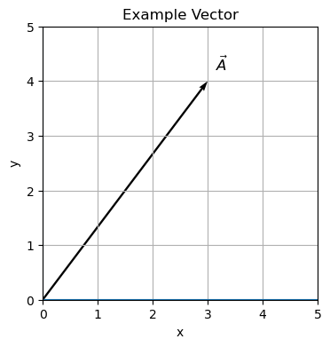
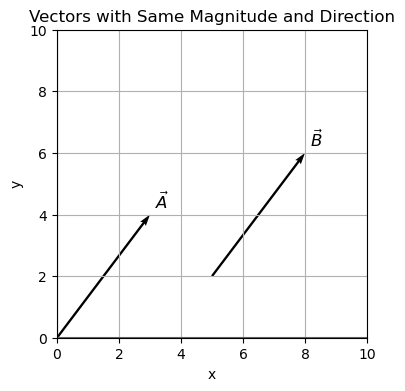

C1.1 Introduction to Vectors#
C1.1.1 Scalars vs. Vectors#
A scalar in physics is a quantity that can be described by a number only (and in most cases an associated unit). Examples are:
Distance: a car traveled 50 miles.
Speed: a car traveled at 50 miles per hour.
Energy: the kinetic energy of a running cat is 500 J.
Temperature: the temperature is 293 K.
The key point is that the number (and the unit) on its own makes sense without any other specifications.
A vector in physics is a quantity that is described by both a magnitude and direction (and an associated unit). The most common vectors we will encounter in this course are:
Displacement: a car traveled 50 miles due east.
Velocity: a car traveled at 50 miles per hour due east.
Acceleration: the ball accelerated 9.81 m/s\(^2\) downwards.
Momentum: the momentum of the car is 20,000 kgm/s to the right.
Force: The person pulls the crate with a force of 20 N to the left.
It can be advantageous to visualize a vector in a geometric sense. In this case, we will say that a vector is a directed line segment.
C1.1.2 Beyond Scalars and Vectors#
While the above definition of a vector appears straightforward, it is because you are not been provided all the information. In fact, you are only being provided enough information that is needed to succeed in University Physics I.
Ok, if you want a little bit of the truth: a vector can be characterized as either covariant or contravariant depending on how it transforms under a coordinate transform from one coordinate basis to another. This is some hot stuff and typically covered in a course such as differential geometry. The issue is not important when dealing with rectangular coordinate systems such as our standard cartesian \(xyz\)-system (there is no distinction between covariant and contravariant components), but becomes essential in non-orthogonal coordinate transformations (for example: spherical). Fields such as quantum mechanics and general relatively, and even advanced classical Newtonian mechanics, will need an understanding of these concepts.
There are physical quantities that are not scalars nor vectors, but instead belong to a higher order of geometric objects (really difficult to visualize). In fact, a scalar is a 0th rank tensor, a vector is a tensor of rank 1. As we proceed to higher orders, we do not have special words for the tensors and simply refer to them as tensors of rank 2, 3, etc.
Now, we will not directly use tensors in our course, and you will have to wait until more advanced physics courses to fully experience tensors (but then I am sure you will be really excited as the cool-factor is off the chart!). However, we will consider components of a few tensors, which in our cases reduce to scalar quantities. Examples of tensors are
Stress tensor: pressure is the normal component of the stress tensor
Moment of Inertia: we will only learn about the normal component in this class
I strongly recommend taking courses in Linear and Abstract Algebra as well as Differential Geometry to learn more about vectors.
C1.1.3 Geometrical Representation of a Vector#
In a very concise form: a vector is a directed line segment. Consider two points, A and B, with a line drawn from A (initial point) to B (terminal point). We can specify the direction of the line segment with an arrowhead.
The length of the line represents the magnitude of the vector and the arrowhead indicates the direction. A vector is usually represented in the text as a letter with an arrow above: \(\vec{A}\).

C1.1.4 Vectors Characterized by Magnitude and Direction Only#
Two vectors with the same lengths and directions are identical as a vector is uniquely characterized by those two parameters.
Below, the vectors \(\vec{A}\) and \(\vec{B}\) are the same vector since they have the same magnitude and direction despite the fact that they in different locations.
